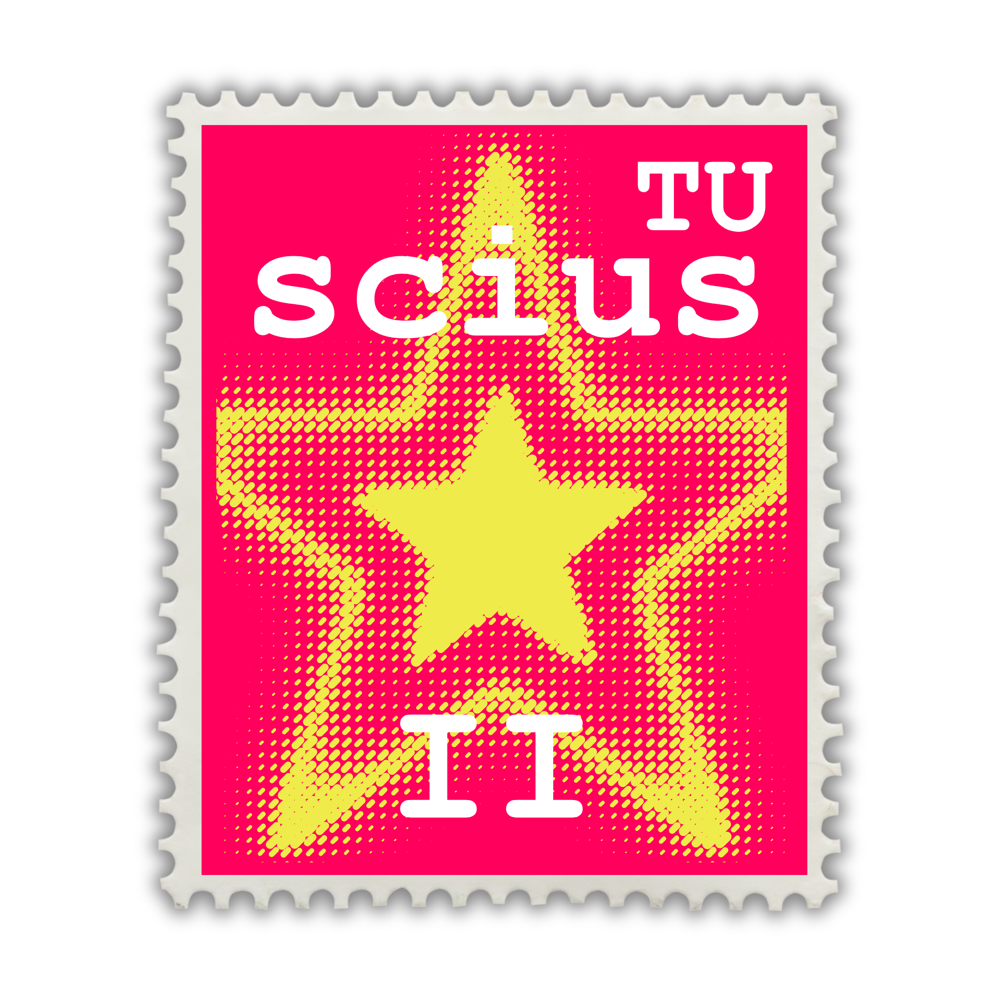
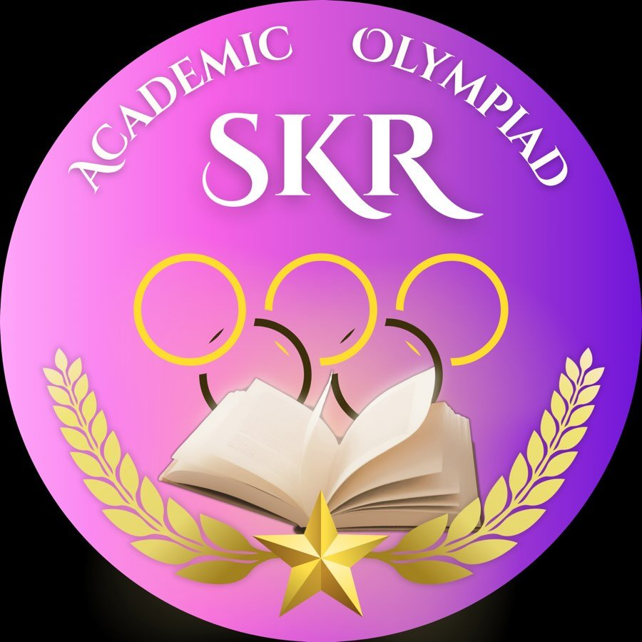

Activity !
Ornin Bentaborirakkun ( Pakkad )
SciusTU10 student
ในหน้านี้จะเกี่ยวกับกิจกรรมต่าง ๆที่เคยทำมาในสมัยมัธยมปลาย ส่วนตัวเป็นเด็กกิจกรรม เลยได้ลองทำอะไรหลายอย่างมาก ๆ
 < Back
< Back
Ornin Bentaborirakkun ( Pakkad )
SciusTU10 student
ในหน้านี้จะเกี่ยวกับกิจกรรมต่าง ๆที่เคยทำมาในสมัยมัธยมปลาย ส่วนตัวเป็นเด็กกิจกรรม เลยได้ลองทำอะไรหลายอย่างมาก ๆ
< Back


รับบทเป็นมือคีย์บอร์ด ในหลาย ๆ งานที่โครงการจัดเช่น งานรับน้อง ปาร์ตี้ ปัจฉิมต่าง ๆ สนุกดี ชอบความรู้สึกที่อยู่บนเวที แต่วางมือแล้วดีกว่า ขอลงไปโดดมั่ง55 ในอนาคตเองมหาลัยถ้ามีโอกาสก็ยังอยากเล่นดนตรีกับวง
รับน้องรุ่น 11 2025 / Once 2025 / Byenior 2025



กิจกรรมรับน้องใหม่ ทำเพื่อรับน้อง ๆ ม.4 รุ่นที่ 11 ทั้ง 60 คนตอนเราเป็นเด็ก ม.5 เป็นงานที่ทำทั้งรุ่นและสเกลใหญ่มาก ๆ ตั้งแต่งานประฐมนิเทศในหอประชุม กิจกรรมสันทนาการ กิจกรรมฐาน พร็อบตกแต่งสถานที่ พิธีเทียน After party concert คอนเท้นต์ในโซเชียล บริหารงานในรุ่น เรียกว่าตำแหน่งงานเราได้แตะทุกงานไม่มากก็น้อย55 งานใหญ่ที่สุด เหนื่อยที่สุดในการจัดกิจกรรมมาเลย ภูมิใจในรุ่นสิบทุกคนที่ทำงานนี้ออกมาให้เด็กๆได้
with SCIUS TU 10
SKR academic olympiad เป็นเหมือนชมรมเล็ก ๆ ที่รวมทีมงานสาขาวิชาต่าง ๆ เพื่อส่งเสริมทักษะวิชาการของนักเรียนในโรงเรียน เป็นทีมงานในสาขา Math เมื่อก่อนพวกเราจะเน้นไปที่ สอวน. อย่างเดียวแต่ปีล่าสุดได้ขยายไปเป็นด้านวิชาการทั้งหมด ได้ทำตั้งแต่กราฟฟิก จัดสอบแข่งขันภายในโรงเรียน ออกข้อสอบ พิธีกรวันแข่งเลย สนุกดี ๆ เพราะที่นี่ทำงานเป็นระบบแข็งแรงมาก ๆ
skr_academic_olympiad